预览和发布API文档
下面介绍Postman中如何预览和发布API文档。
简要概述步骤
- Collection
- 鼠标移动到某个Collection，点击 三个点
- Publish Docs
- Publish
- 得到Public URL
- 别人打开这个Public URL，即可查看API文档
详细解释具体操作
预览API文档
点击分组右边的大于号>
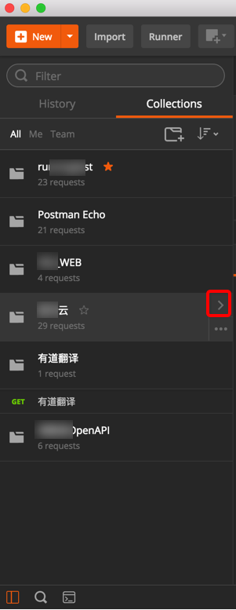
如果只是预览，比如后台开发员自己查看API文档的话，可以选择：View in web
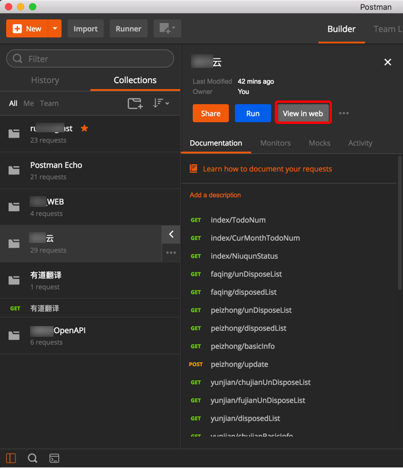
等价于点击Publish Docs去发布：
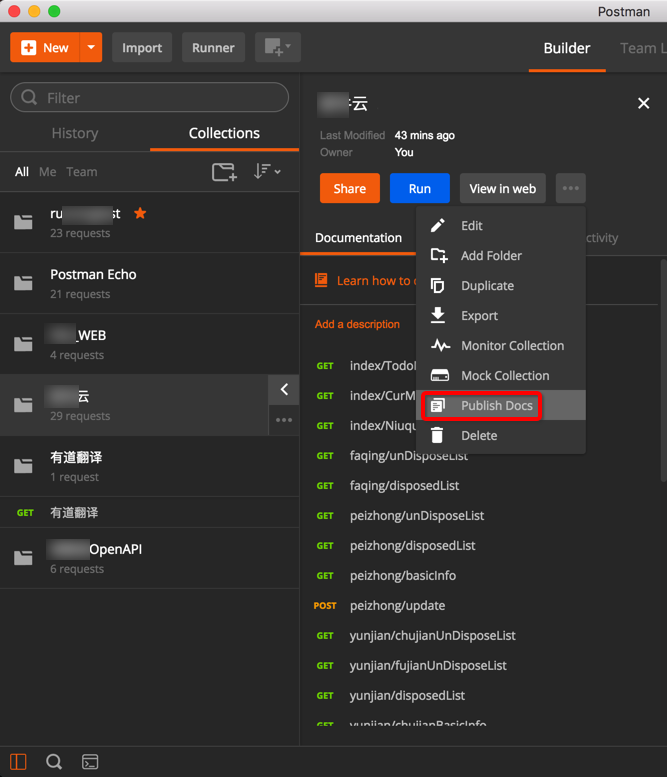
View in Web后，有 Publish的选项（见后面的截图）
View in Web后，会打开预览页面：
比如：
奶牛云
https://documenter.getpostman.com/collection/view/669382-42273840-6237-dbae-5455-26b16f45e2b9
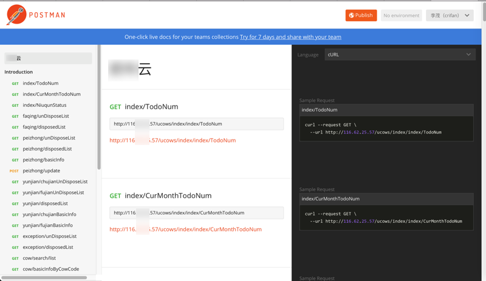
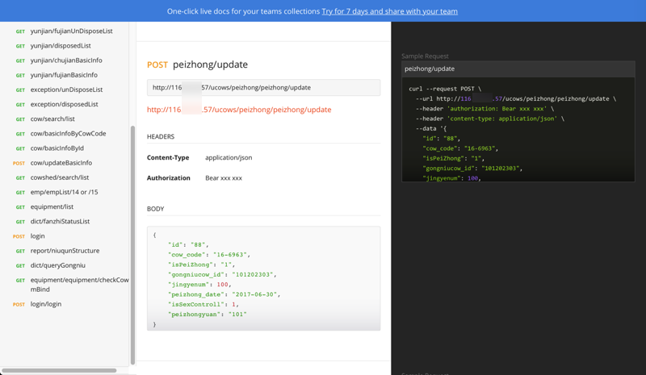
而右边的示例代码，也可以从默认的cURL换成其他的：
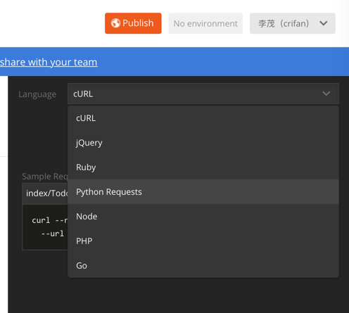
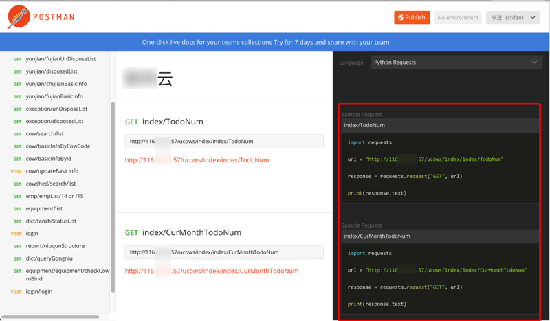
发布API文档
如果想要让其他人能看到这个文档，则点击 Publish：
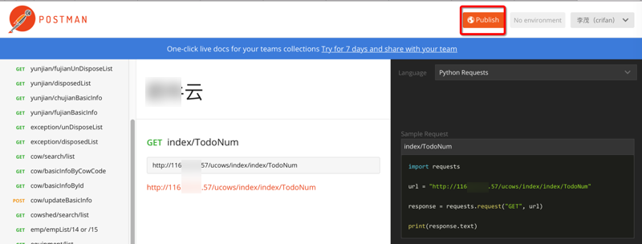
然后会打开类似于这样的地址：
Postman Documenter
https://documenter.getpostman.com/collection/publish?meta=Y29sbGVjdGlvbl9pZD00MjI3Mzg0MC02MjM3LWRiYWUtNTQ1NS0yNmIxNmY0NWUyYjkmb3duZXI9NjY5MzgyJmNvbGxlY3Rpb25fbmFtZT0lRTUlQTUlQjYlRTclODklOUIlRTQlQkElOTE=
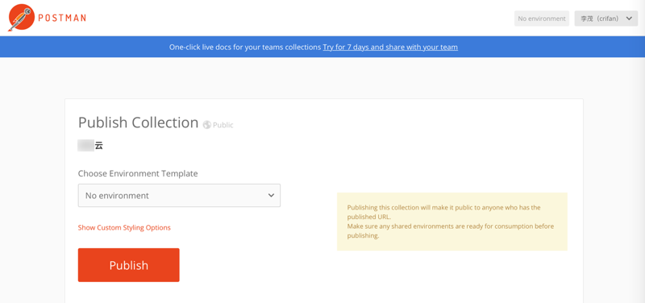
点击Publish后，可以生成对应的公开的网页地址：
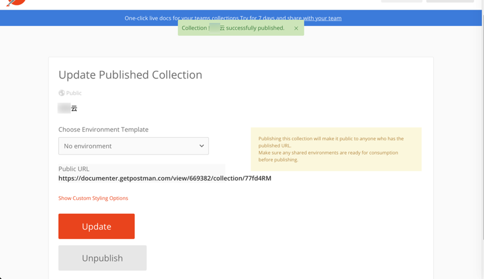
打开API接口文档地址：
https://documenter.getpostman.com/view/669382/collection/77fd4RM
即可看到（和前面预览一样效果的API文档了）：
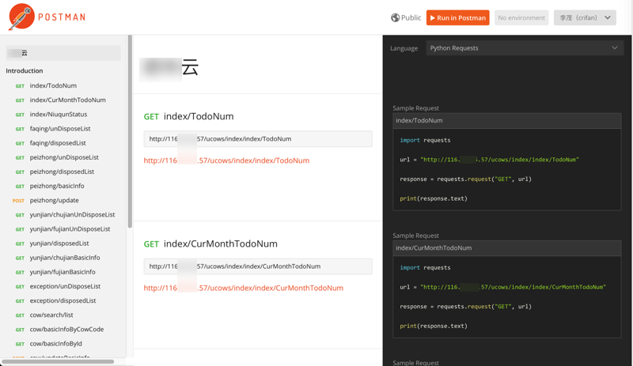
如此，别人即可查看对应的API接口文档。
已发布的API文档支持自动更新
后续如果自己的API接口修改后：
比如：
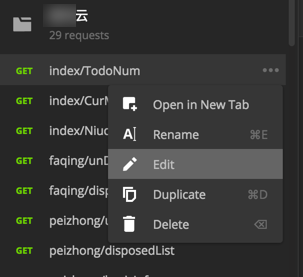
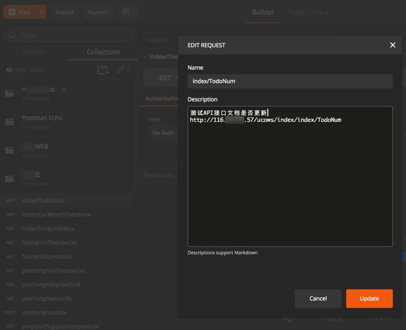
（后来发现，不用再去进入此预览和发布的流程，去更新文档，而是Postman自动支持）
别人去刷新该文档的页面：
https://documenter.getpostman.com/view/669382/collection/77fd4RM
即可看到更新后的内容：
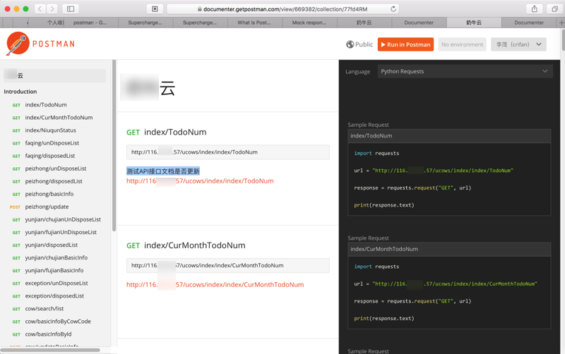